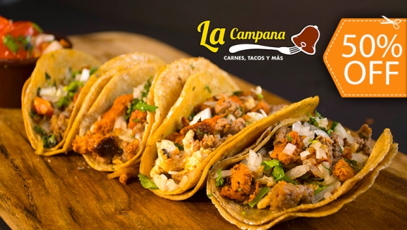
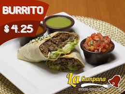
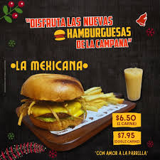
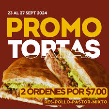

Historia o Quienes somos

Tacos Rellenos comunes
Tacos de carne: carne de res en tiras o picada, cebolla
|
Burritos Tortillas de maíz o harina.
Carne de buena calidad (como pollo, carne picada o cerdo).
|
|---|
Hamburguesa Ingredientes esenciales
Carne:
Pan:
Queso:
Vegetales: Lechuga, tomate, cebolla
|
Tortas Ingredientes esenciales Carne: Pan: Queso: Frijoles Vegetales: Lechuga, tomate, cebolla Salsas y condimentos |
|---|